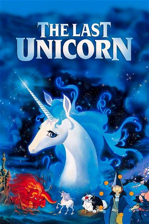

The Last Unicorn (1982)
FantasyAnimationFamilyAdventure
| Year | 1982 |
|---|---|
| Rating | US:G / US:Rated G |
| Genre | Fantasy, Animation, Family, Adventure |
A unicorn learns from a riddle-speaking butterfly that she is supposedly the last of her kind, all the others having been herded away by the monstrous Red Bull. The unicorn sets out to discover the truth behind the butterfly's words. She is eventually joined on her quest by Schmendrick, a second-rate magician, and Molly Grue, a middle-aged woman who dreamed all her life of seeing a unicorn. Their journey leads them far from home, all the way to the castle of King Haggard.